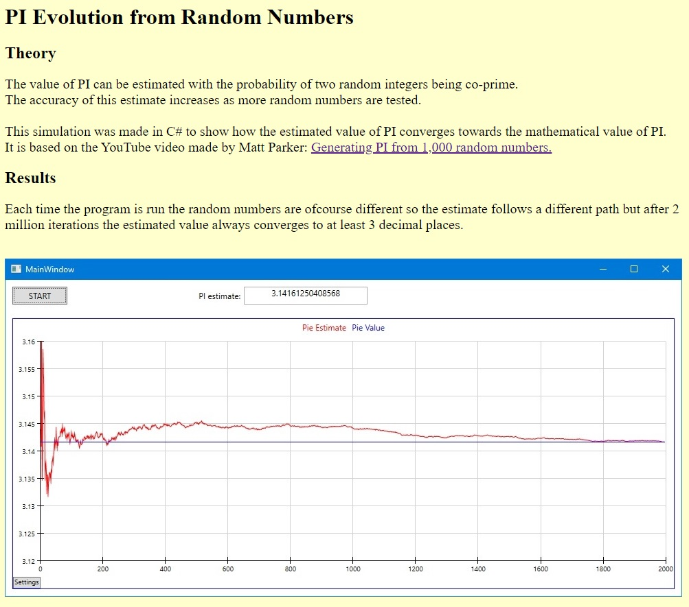

The value of PI can be estimated with the probability of two random integers being co-prime.
The accuracy of this estimate increases as more random numbers are tested.
This simulation was made in C# to show how the estimated value of PI converges towards the mathematical value of PI.
It is based on the YouTube video made by Matt Parker: Generating PI from 1,000 random numbers.
Each time the program is run the random numbers are ofcourse different so the estimate follows a different path but after 2 million iterations the estimated value always converges to at least 3 decimal places.
Test 1
Test 2